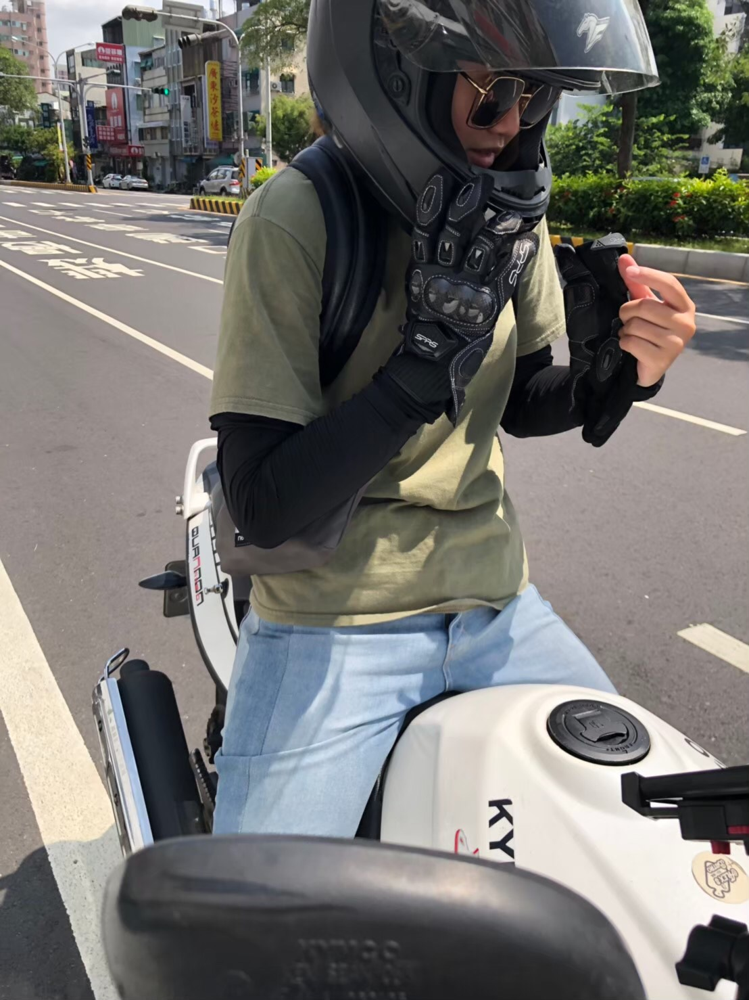

Jessy Chia-Yu Lin
PhD Candidate, Management of Information Systems
National Chengchi University, Taiwan
![LinkedIn]()


Recent Works
Selected Publications
- Lee, J.Y.H., Panteli, N., & Lin, J.C.Y. (2025). Managing medical knowledge flow: Physicians' social media actualisation practices. Social Science & Medicine, 365, 117534. (ABS: 4*, IF: 5.4, Ranking: 3/48 in Social Sciences, Biomedical)
- Lin, J.C.Y., Lee, J.Y.H., & Tu, Y.J. (2025). Leveraging GenAI creativity to revitalize declining communities. European Group for Organizational Studies (EGOS) Colloquium, Athens, Greece.
- Lin, J.C.Y., & Lee, J.Y.H. (2024). Enhancing patient support in online health communities: the interplay of social cues. International Conference of Information Systems (ICIS) TERO, 51, Bangkok, Thailand.
- Lin, J.C.Y., Lee, J.Y.H., Tseng, S.F., & Yang, C.S. (2023). Discovering the Intertwined Emotions and Information Seeking Behaviour in an Online Parenthood Community. UK Academy for Information Systems (UKAIS) Conference Proceedings, Canterbury, UK.